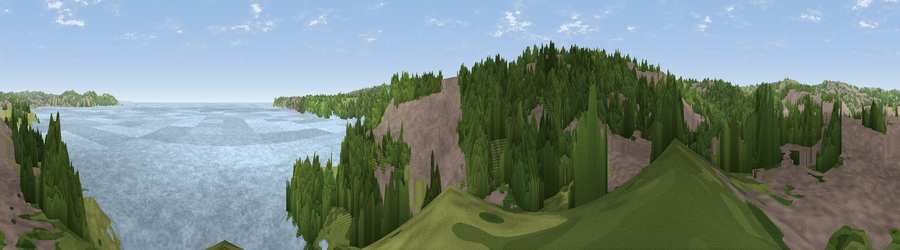

Viewpoint near Galmpton
#16860 in England · top 37% of its area beats it · near GalmptonThe view, rendered

A 360° render of this exact spot computed from the terrain model, tree cover and land cover — summer colours, afternoon light, calibrated against photographs of famous viewpoints. Real trees, hedges and buildings will differ in detail.
The panorama
Grey silhouette: terrain skyline in each direction (720 bearings, Earth curvature and refraction included). Dashed green: skyline with trees (+15 m) and buildings (+8 m) as obstacles. Blue strip: how far the ground is visible on each bearing.
Where the view opens
Wedge length = distance to the farthest visible ground on that bearing (vegetation-aware). Rings at 10, 25 and 50 km.
What fills the view
39% water · 29% woodland · 22% built-up · 10% grassland
Angular shares of the visible panorama (visual magnitude), not map area. Landscape diversity 0.57 (0–1 Shannon).
Key numbers
More beautiful places nearby
The staircase of upgrades: each row has a higher view potential than everything closer. Driving times are estimates from straight-line distance, calibrated against real road routing — check an actual route before setting out.
| Place | Direction | Drive | Score |
|---|---|---|---|
| Viewpoint near Galmpton | S · 3 km | ~8 min | 66.5 |
| Viewpoint near Marldon | NNW · 4 km | ~9 min | 67.5 |
| Viewpoint near Stoke Gabriel | WNW · 4 km | ~9 min | 79.1 |
| Beacon Hill | NW · 5 km | ~11 min | 82.3 |
| Viewpoint near Kingswear | SSE · 8 km | ~16 min | 83.8 |
| Viewpoint near Stokeinteignhead | NNE · 12 km | ~22 min | 84.1 |
| Viewpoint near East Prawle | SSW · 26 km | ~41 min | 84.6 |
| High Peak | NE · 35 km | ~53 min | 85.3 |
50.41569, -3.55841 · source: screening · position refined by local search. Computed location — check access rights before visiting.